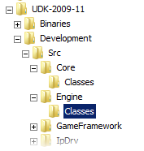

UDN
Search public documentation:
DevelopmentKitFirstScriptProjectCH
English Translation
日本語訳
한국어
Interested in the Unreal Engine?
Visit the Unreal Technology site.
Looking for jobs and company info?
Check out the Epic games site.
Questions about support via UDN?
Contact the UDN Staff
日本語訳
한국어
Interested in the Unreal Engine?
Visit the Unreal Technology site.
Looking for jobs and company info?
Check out the Epic games site.
Questions about support via UDN?
Contact the UDN Staff
您的第一个UnrealScript工程
文档概要:关于在虚幻开发工具包中创建您的第一个UnrealScript工程的指南。 文档变更记录:示例游戏的最初部分。概述
本指南将会引导您在UDK中创建您的第一个UnrealScript工程。本指南不是关于使用UDK创建完整游戏的指南也不会为您提供它所呈现的游戏架构的详细信息。设立环境
在您开始编程之前，您需要设置您的开发环境。设置UDK
从获得最新版本的UDK开始。然后执行安装包，并根据指示进行操作。最好把UDK按照到您系统中比较容易找到的目录中，不要把它隐藏在"Program Files"目录的某处。因为您在开发过程中将会经常地访问UDK目录。 我们将会定期地提供UDK的新版本。但是最好不要一有新版本就立即地进行更新。因为可能新版本中的某些东西改变了，可能会打断您的项目。当一个新版本的UDK发行了时，您要确定您的项目处于稳定状态。然后再把它移植到新的版本中并且要确保一切都可以正常工作。UDK目录布局
UDK安装目录的布局如下所示(知道您第一次运行UDK之前，某些目录可能还不存在)：-
Binaries;包含了各种工具。-
ActorX;各种3D建模程序的ActorX插件。 -
FaceFXPlugins;各种3D建模程序的FaceFX插件。 -
InstallData;在安装UDK期间使用的文件。 -
SpeedTreeModeler; SpeedTree 工具。 -
Win32;这个文件包含了UDK和可执行文件和各种需要的库文件。 -
Win64;包含了UnrealLightmass的64位版本。 -
Windows; 包含了一个安装文件，用于安装个UDK所需要的各种运行时库文件。这些库文件已经在启动时安装到了您的系统中。
-
-
Development;开发目录。-
Src;这个目录是所有的源文件，包括UnrealScript源文件。目录已经包含了UDK中的代码的UnrealScript源文件。您你可以把您自己的源文件添加到这个目录中。
-
-
Engine;这个目录式引擎的基本文件。您不能改变这个目录汇总的任何内容，这也是设置UTGame目录的原因。您的应用程序可以使用这个目录中的任何东西，即使您创建的是商业化的UDK应用程序。-
Config; 这个目录包含了基本的配置文件，这些文件通常会被UTGame目录中的配置文件所继承。 -
Content;内容包。 -
EditorResources;编辑器所使用的资源文件。 -
Localization;本地化文件。每种语言都有它自己的子目录，包含着本地化文件。 -
Shaders;着色器源文件。 -
Stats; 用于创建各种开发统计数据报告的模版文件。
-
-
UTGame; 您可以向其中添加新内容的文件。-
Build -
Config;这个目录包含了两个类型的配置文件，默认配置文件，和随着时间不断进行更新的具体化的配置文件。默认的配置文件为系统提供了默认的配置，并且引擎将永远不会更新这些文件。 -
Content;包括了您的应用程序的内容包(包括关卡)。当创建商业化的应用程序时，您不能使用在这个目录中的内容。对于它的子目录没有固定的设置，所有的子目录都是根据配置决定的。 -
Localization;本地化文件。 -
Logs;这个目录用于存放日志文件和崩溃报告。 -
Movies;这个目录是供在游戏中显示的Bink 视频使用的。注意：您必须在您的应用程序中包含并显示UE3_logo.bik视频。 -
Script;这个目录包含了编译好的脚本包。 -
Splash; 包含了当您启动编辑器和游戏时要出现的程序启动屏幕。
-
IDE/Editor(集成开发环境/编辑器)
UDK不包括用于书写UnrealScript的编辑器。UnrealScript和Java非常类似。源代码存储在普通的文本文件中。所以您可以使用您最喜欢的编辑器书写您的代码。 然而，有一些可以提供更多功能的专用编辑器。nFringe
目前最著名的编辑器是Pixel Mine Games的nFringe。nFringe为UE3和UDK提供了完全的集成开发环境。nFringe依赖于Microsoft的Visual Studio IDE。它既可以和Visual Studio的专业版本进行协同工作也可以和免费的Visual Studio Express进行协同工作。 对于非商业化的项目，nFringe是免费的。关于nFringe的更多信息，可以在这里找到。 请根据以下这些说明来安装nFridge。 您应该在授权用户项目模式中使用nFringe，而不是在"General(一般)/Mod 项目"模式中使用。 您所创建的项目不是针对于一个包的，它是针对于整个UDK的一个独立的项目。所以正如指示说明所提到的，您应该把项目和解决方案文件存储在UDK\Development\src 目录中。
nFringe不能自动地管理 UnrealScript 包，您必须手动地为每个包创建适当的目录结构，并且更新配置文件，以便那个包会被包括在编译过程中。请参照项目设置来获得详细信息。
WOTgreal
另一个专门为UnrealEngine书写的集成开发环境(IDE)是WOTgreal。WOTgreal对UnrealEngine3提供了部分支持。虽然WOTgreal的各种功能不能和UE3协同工作得很好，但是您仍然可以使用它的书写UnrealScript、代码查看和代码完成功能。 要想使用WOTgreal，您首先需要下载最新的稳定的发布版本安装。然后再下载完最新的开发发布版本后，把内容提取到安装目录中，覆盖原先的文件。要想在Windows Vista中使用WOTgreal，那么您必须使用管理员权限启动。

- Display name(显示名称)
-
UDK(或者任何其它您喜欢的名称) - Game EXE name
-
udk - Menu name
-
UDK - Use "extends" instead of "expands"
- Game Architecture
- "UE3"

- UCC.exe File
-
{UDK directory}\binaries\win32\udk.com - Game Root Dir
-
{UDK directory} - Source Root Dir
-
{UDK directory}\Development\Src
udk.com 而不是 udk.exe ，这是很重要的。


c:\windows\system32\cmd.exe /C {UDK directory}\binaries\win32\udk.com make 。
在"Post-Compile(预编译)"标签下输入以下位置作为log name(日志名称)：
{UDK directory}\UTGame\Logs\Launch.log.
当完成这些步骤后，WOTgreal便可以使用了。可以按下F5键来生成包和类的树结构。这可能会花费一段时间。
WOTgreal不会显示UnrealScript接口，但是您可以使用编辑器来书写它们。它也不会识别预处理命令，但是只要您不在声明时使用它们，那么您应该不会遇到任何问题。
和nFringe不一样，WOTgreal可以为UnrealScript包创建正确的目录结构。然而，它不会在编译期间更新配置来包括那些包。请参照项目设置页面获得更多信息。
其它编辑器
当然您也可以使用其它的您喜欢的编辑器。某些编辑器提供了针对UnrealScript的语法提示功能和其它的高级功能。请参照社区建立的UnrealWiki来获得关于其它编辑器的更多信息。 当使用正常的文本编辑器时，您或许会想使用工具UnCodeX。它提供了像您可以在nFringe 或 WOTgreal中看到的类和包的树状结构，同时也为一般编辑器提供了各种其它的附加功能。您应该下载最新的稳定版本，安装后，再下载最新支持UE3的最新开发发布版本。其它的重要事情
在不久的将来，当您的应用程序开发开始后，您或许会考虑使用一个版本控制系统。版本控制系统的有两个主要作用。其中一个最重要的作用是它提供了您项目开发的文件备份和跟踪记录。当您在开发中出现错误时，您可以很容易地回滚到先前的版本。第二个重要的作用是它允许您和多个人设计同一个项目。实例应用
这个部分将会讨论使用UDK开发一个小应用程序。我们将把这个应用程序称为CluOne 。这小的应用程序不会有太多作用，它仅是一个简单的系统，要求显示一些您当前正在查看的游戏元素的信息。
项目设置

正如前面所说的，目录UDK\Development\src 是源码的位置。那个目录已经包换了UDK中的所有UnrealScript类的源码。每个子目录是为一个单独的包提供的。
CluOne 的源码应该添加到这个目录中。这个实例应用程序是一个小应用程序，因此，一个独立的包已经足够了。在 UDK\Development\src 目录中创建一个称为 CluOne 的文件夹。在那个 CluOne 目录中，创建另一个称为 Classes 的目录。UnrealScript编译器在 UDK\Development\src\*\Classes 中查找UnrealScript代码。在这个包目录中的其它内容将会被忽略。
即使 CluOne 目录存在于 src 目录中，编译器也不会去获取它。需要更新配置文件并把 CluOne 作为一个有效的包注册到 CluOne 包中。打开文件 UDK\UTGame\Config\UTEngine.ini 并找到名称为 [UnrealEd.EditorEngine] 的部分。在这部分中，您会看到某些称为 EditPackages 的项。这些项是编译器要考虑进行编译的默认包。 EditPackages 是供基本的UDK包使用的，自定义的包应该作为 ModEditPackages 进行添加。因此，对于包 CluOne 来说，应该添加 ModEditPackages=CluOne 项。在=EditPackages= 和 ModEditPackages 中的包的列出顺序是很重要的。它定义了包的编译顺序，这将会影响类的继承关系。当一个类的父项还没有编译完成时则不能编译这个类。UnrealScript编译器还不像Java编译器那样高级，它本身还不能解决编译的顺序。
UnrealScript的类层次结构
UDK有很多UnrealScript类，大约有2000个。知道所有这些类的用途是不重要的。但是最好使用nFringe、WOTgreal 或 UnCodeX来查看整个类的层次结构。 有两个非常重要的并且完全截然不同的基础类。第一个是基类Object 。 Object 定义了很多核心函数，包括各种操作符。第二个重要的类是 Actor 。 Actor 类是您游戏中所有“移动的”或“活动的”元素的基类。在关卡中的所有元素都是 Actors ，但是不是所有的 Actors 都是可见的。比如，默认情况下 Info 的所有子类都是不可见的。 Object 用于工具或较小的功能，同时也用于用户界面。需要具有网络功能的UnrealScript类必须是 Actor 的子类。
这个指南将会扩展以下类：
- GameInfo
- 这是游戏逻辑的主要类。当使用UDK创建一个应用程序时，您将很可能回创建一个这个游戏的子类。 $ PlayerController :这个类代表一个玩家，它不是可见部分，但是它处理输入和执行动作。玩家的实际视觉展示效果(如果有任何玩家)是通过
Pawn子类来执行的。
GameInfo 子类
大多数应用程序的入口点是GameInfo 的子类。这个类定义了创建哪个 PlayerController 类以及其它各种重要的游戏逻辑类。在这个指南中，仅对类进行了简要的介绍，因为关于类如此多的信息以至于不能进行完全地解释。
类声明
要想创建一个新类，您只要简单地在要包含那个类的包目录Classes 中创建一个和您想创建的类的名称一样的文件。对于 CluOne 应用程序来说，创建了 GameInfo 的子类 CluOneGame ，并且它被保存到文件 UDK\Development\Src\CluOne\Classes\CluOneGame.uc 中。
UnrealScript类按照以下方式进行声明:
class CluOneGame extends GameInfo;注意，它以分号(;)结尾，并且没有花括号。那类所声明的任何东西都属于那个类。并且每个文件仅能声明一个类。
新的player controller(玩家控制器)
CluOne 使用了一个新的PlayerController类。当用户连接到游戏时， GameInfo 类为这个用户创建了一个控制器。为了使 GameInfo 创建正确的类，以下代码将添加到源代码的尾部。
defaultproperties
{
PlayerControllerClass=class'CluOnePlayerController'
}
defaultproperties 代码块定义了某些变量的默认值。这和其它程序语言中的变量初始化类似(但是不完全一样)。默认的 GameInfo 实现将会基于 PlayerControllerClass 变量的值创建一个新的 PlayerController 实例。当然，也有其它的方法来创建正确的类实例，但是这是最简单并且最好的方法。
问候用户
当玩家连接到服务器后，将会在GameInfo 中触发一系列的事件。其中有三个事件是 PreLogin 、 Login 、和 PostLogin 。事件名称本身已经暗示了它们的顺序。在 PostLogin 事件处，用户已经完全地连接上，并且可以进行交互。
这时用户将会受到问候：
event PostLogin( PlayerController NewPlayer )
{
super.PostLogin(NewPlayer);
NewPlayer.ClientMessage("Welcome to the grid "$NewPlayer.PlayerReplicationInfo.PlayerName);
NewPlayer.ClientMessage("Point at an object and press the left mouds button to retrieve the target's information");
}
默认的玩家名称通过变量 DefaultPlayerName 来定义，它被定义为可以本地化的字符串。改变默认名称的正确方法是更新本地化文件。但是我们暂时使用以下函数对玩家姓名进行硬编码：
event PlayerController Login(string Portal, string Options, const UniqueNetID UniqueID, out string ErrorMessage)
{
local PlayerController PC;
PC = super.Login(Portal, Options, UniqueID, ErrorMessage);
ChangeName(PC, "Clu", true);
return PC;
}
PlayerController 子类
在自定义的PlayerController类中将会可以进行一些有趣的操作。 我们从类的简单声明开始：class CluOnePlayerController extends PlayerController;
Crosshair(瞄准线)
默认情况下，PlayerController类不会显示瞄准线。但是各种现有的子类显示瞄准线。有各种各样的方式来最终地描画瞄准线。您可以把它委派给玩家当前持有的武器项，或者您可以从HUD来描画它，或者您可以从PlayerController直接地描画它。DrawHud(...) 是从 PlayerController上当前的HUD调用的，以便它可以在屏幕上描画额外的东西。以下代码在屏幕的中心描画了一个小的绿色的瞄准线。
/**
*描画一个瞄准线。这个功能通过Engine.HUD类调用。
*/
function DrawHUD( HUD H )
{
local float CrosshairSize;
super.DrawHUD(H);
H.Canvas.SetDrawColor(0,255,0,255);
CrosshairSize = 4;
H.Canvas.SetPos(H.CenterX - CrosshairSize, H.CenterY);
H.Canvas.DrawRect(2*CrosshairSize + 1, 1);
H.Canvas.SetPos(H.CenterX, H.CenterY - CrosshairSize);
H.Canvas.DrawRect(1, 2*CrosshairSize + 1);
}
fire(开火)按钮
现在我们已经看到了我们正在看的东西。我们需要通过某种方法来触发“正在注视的东西”。我们可以一直看着，但是我们决定当用户按下鼠标左键时仅查看特定信息。 通过输入处理系统，鼠标左键被映射为开火动作。开火动作通常是要执行的一个"console commands(控制台命令)"序列。(请参照文件Engine\Config\BaseInput.ini )。
定义在某些类(比如player controller类)中的带有 exec 修饰符的函数被作为所谓的"console commands(控制台命令)"。开火动作执行的其中的一个控制台命令是 StartFire 。 StartFire 命令定义在 PlayerController 类中。
在我们的自定义player controller类中，我们将会重写这个函数， 并添加我们自己的逻辑：
/*
* player controller的默认状态
*/
auto state PlayerWaiting
{
/*
*当用户按下开火键(默认是鼠标左键)时调用这个函数。
*/
exec function StartFire( optional byte FireModeNum )
{
showTargetInfo();
}
}
正如您看到的， StartFire 函数实际上是定义在状态 PlayerWaiting 中的。在UnrealEngine(虚幻引擎)中Actor类别是隐含的状态机。这意味着它将会根据actor的当前状态调用函数的一个实现。所以，根据actor的状态，当您按下开火按钮时，您可以获得不同的行为。玩家控制器的默认行为是 PlayerWaiting 状态。所以这就是我们为什么在那个状态中重写 StartFire 函数的原因。
我们所看到的东西的实际显示信息在 showTargetInfo 函数中进行实现。
我们正在看的东西
为了知道当前玩家正在注视的东西是什么，我们需要跟踪到我们遇到的第一个东西的视线。这可以使用定义在Actor 类中的 trace(...) 函数来完成。Trace函数用于确认物体是否可见或者用于设置武器开火的目标。
我们使用trace函数来找到视线所遇到的第一个游戏元素。当视线遇到某个游戏元素时，我们会针对那个元素播放一个声音或者打印几行文字信息。
/*
*打印几行关于我们正在看的东西的信息。
*/
function showTargetInfo()
{
local vector loc, norm, end;
local TraceHitInfo hitInfo;
local Actor traceHit;
end = Location + normal(vector(Rotation))*32768; // 跟踪到 "无穷大"
traceHit = trace(loc, norm, end, Location, true,, hitInfo);
ClientMessage("");
if (traceHit == none)
{
ClientMessage("Nothing found, try again(没有找到任何东西，请重试。)");
return;
}
//为确认信息播放一个声音
ClientPlaySound(SoundCue'A_Vehicle_Cicada.SoundCues.A_Vehicle_Cicada_TargetLock');
//默认情况下在那时会显示４个控制台信息。
ClientMessage("Hit: "$traceHit$" class: "$traceHit.class.outer.name$"."$traceHit.class);
ClientMessage("Location: "$loc.X$","$loc.Y$","$loc.Z);
ClientMessage("Material: "$hitInfo.Material$" PhysMaterial: "$hitInfo.PhysMaterial);
ClientMessage("Component: "$hitInfo.HitComponent);
}
Tracing(跟踪)是从一个开始点到一个给定的结束点来进行的。我们使用player controller(玩家控制器)的当前位置作为起始点。我们尽量指向“无穷远”处作为终点。这可以通过使用一个当前旋转值的正规化向量扩展player controller(玩家控制器)的当前位置来实现。旋转值定义了相机的角度。正规化向量和世界的最大距离相乘(大小在-32767 和 32768之间)。这是一个基本的向量数学计算，如果您想在３D方面做一些事情，那么您需要完全地理解它。
ClientMessage(...) 函数会在当前玩家的控制台中输出一些信息。这个函数也用于玩家之间或某些游戏事件之间的交谈。它也是在屏幕上输出调试信息的很好的方法(但是在那种情况下，请记住在您发行游戏之前，删除您的调试代码)。
实例结束
这是我们的小UnrealScript实例的结尾部分。在您使用UDK书写真正的应用程序之前还需要学习很多东西。请参照本文档尾部列出的其它文档来获得关于UnrealScript和UnrealEngine的游戏架构的更多信息。 您可以从这里下载 这个实例的源代码。编译
有几个方法来编译您的源代码。当您正在使用支持UDK的集成开发环境(IDE)时，您可以简单地通过按下编译按钮来编译您的项目。 另一种方法是使用UnrealFrontend来编译代码。当您启动了frontend时，简单地按下工具条中的"Make(制作)"按钮，它将会初始化编译器。您可以根据需要频繁地押下按钮。它将仅编译有改变的源码文件。您也可以通过按下在make(制作)按钮旁边的向下的箭头并选择"Full Recompile(全部重新编译)"来启动全部的重新编译功能。 使用frontend时有个问题是它不能总是显示全部的编译输出信息，因此需要您手动地打开日志文件。
第三种方法是通过执行命令行命令来完成编译，实际上这种方法是前两种方法启动编译器的方法。一个正常的编译通过以下来生成：
使用frontend时有个问题是它不能总是显示全部的编译输出信息，因此需要您手动地打开日志文件。
第三种方法是通过执行命令行命令来完成编译，实际上这种方法是前两种方法启动编译器的方法。一个正常的编译通过以下来生成：
C:\UDK\UDK-2009-11\Binaries\Win32\udk.com make要想通过命令行执行完全的重新编译，只要在命令行上简单地添加
-full 参数即可。
当您执行控制台命令时您应该使用 udk.com 可执行程序而不是 udk.exe 。它们都有同样的效果，但是 udk.com 命令将会打印输出到标准输出端，而 udk.exe 将会在一个专用的窗口来显示它。当您想在编译脚本(比如Makefile或Ant编译脚本)中使用编译器时，您需要把输出信息显示到标准输出设备上。在这种情况下，您或许也想添加命令行开关 -unattended 。这将会禁用编译期间的任何交互的提示。
如果在编译过程中没有监听您的包，那么请确保您是否把它们作为 ModEditPackages 添加到 UTGame\Config\UTEngine.ini 文件的 [UnrealEd.EditorEngine] 部分。
测试
当代码编译成功时，便可以测试应用程序了，检查新的功能是否可以按照期望的方式运行。 大多数情况下，我们通过使用给定的启动URL在客户端模式下启动UDK。要想启动CluOne ，UDK应该使用以下命令启动：
C:\UDK\UDK-2009-11\Binaries\Win32\udk ExampleMap?game=CluOne.CluOneGame在这个实例中，启动URL是
ExampleMap?game=CluOne.CluOneGame 。URL以一个地图(在这个实例中是 ExampleMap )或者以要连接到的服务器的 主机/ip 来开始启动。在这后面是一组?key=value元素，这些元素控制各种设置。最重要的 key 是 game ，它定义了当启动游戏时创建哪个 GameInfo 子类。Value(值)是类的完整名称，也就是 PackageName.ClassName 。其它的有效的 ?key=value 元素通常由创建的 GameInfo 来决定的。
这里使用 ExampleMap 是因为它是一个小地图，所以它加载很快。
调试
当书写本文档位置，还没有针对UDK的理想的调试器。或许，在不久的将来，nFringe将会为UDK启用适当的UnrealScript调试，就像它为UT3提供的一样。到那时，您便可以设置断点，并逐步地跟踪所有代码了。但是知道那个功能出现之前，您还要使用传统的调试方法。 通常当程序不按照您期望的方式工作时，可能是由两个原因导致的：- 没有调用代码。
- 您正在尝试访问未设置的数据(也就是 null[空]指针引用)。
C:\UDK\UDK-2009-11\Binaries\Win32\udk.exe -log这将会打开一个具有活动的日志输出的控制台窗口。否则您或许需要在您可以从
UTGame\Logs 目录中读取日志文件前首先关闭客户端。
当查看日志输出文件时，您应该注意以下的输出行：
Log: Accessed None 'AccessControl'
UTDeathmatch DM-Deck.TheWorld:PersistentLevel.UTDeathmatch_0
Function Engine.GameInfo:Login:0358
在UnrealScript中，"Accessed None"等同于空指针异常。日志告诉您正在读取的变量是 none/null，在这个例子中是指 AccessControl 。它也告诉您发生这个异常的函数：即 Engine.GameInfo 类中的 Login 函数。编号 0358 不是行号，实际上它是字节编码偏移，所以忽略它便可，因为没有简单的方法来把它转换为行编号。但是这样至少您可以知道发生错误的地方。
跟踪正在发生的和没有发生的操作的较好的方法是向日志输出中添加额外信息。您可以简单地通过代码来完成这个操作：
`log("This will add a line to the log output(这将添加一行日志输出)");
注意 log 前面的后引号( ` 不要和 ' 字符混淆)。这实际上是一个创建真正的日志调用函数的处理器指令。这个宏的全部签名是：
`log(logMessage,expression,prefix);
-
logMessage - 这是您要记录的信息。
-
expression - 一个表达式，如果提供，要想记录信息则它需要为真。
-
prefix - 您日志信息的前缀名称，这对于从其它所有信息中辨别您的信息是非常有用的。
function foo(Bar quux)
{
if (quux == none)
{
`log("foo was called but quux was none(调用了foo，但是quux为none)");
}
else {
`log("Performing foo on "$quux(在"$quux上执行foo))
}
}
关于其它有用的调试宏指令，请参照文件 Development\src\Core\Globals.uci 。
对于调试来说另一个非常有用的功能是函数 ScriptTrace() ，定义在 Object 中，调用这个函数将会把栈跟踪存储到日志输出中。这允许您看到到达这种情形的函数调用链。
需要注意的一点是，请确保您的代码在编译是没有出现警告。警告在编译时可能没有问题，但是通常在执行代码是会导致错误。